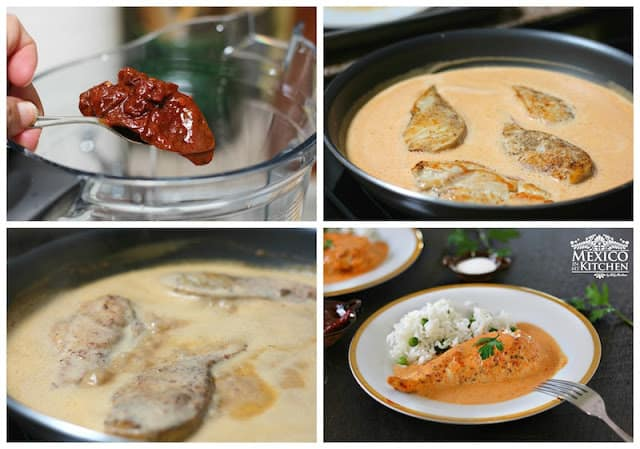

Recetas con amor
Deliciosa receta de pechugas en crema de chipotle.
| Tiempo de prep. total |
Porciones |
Calorias |
| 40 minutos |
4 porciones aprox. |
453 kcal |

Esta receta te va encantar no solo a ti, tambien a toda la familia ya que tu puedes ajustar el picor de los chiles, aparte la crema ayuda mucho a mitigar el picor.
Esta receta pechugas de pollo al chipotle es fácil de preparar, solo te tomará unos minutos para tener una deliciosa y grandiosa comida para toda la familia. Como ejemplo, fue un éxito aquí en casa, ¡Hasta limpiaron el sartén, literalmente!
Ingredientes:
- Pechuga de pollo
- Polvo de ajo molido
- Sal y pimienta al gusto
- Aceite vegetal
- Crema ácida
- 190 gr de queso crema
- Chiles Chipotle (2 chiles o a consideración)
- Caldo de pollo en polvo
- Perejil para decorar
Nota:
- La adición de los 2 chiles puede ser demasiado picante para algunos, pero la crema y el queso crema lo harán muy tolerable.
Instrucciones:
- Sazona las pechugas de pollo con ajo en polvo, sal y pimienta.
- Calienta el aceite en una sartén grande a una temperatura media.
- Una vez que el aceite esté caliente, agrega las pechugas de pollo y cocínelas durante 3 minutos por cada lado, volteándolas una vez. Tienen que verse ligeramente doradas. Retira el pollo y colócalo en un plato.
- Mientras el pollo se está cocinando, coloca la crema espesa, el queso crema, los Chipotles deseados y el caldo de pollo en polvo en la licuadora. Licua por un par de minutos hasta que tengas una salsa de una textura fina.
- Con una toalla de papel, limpia el exceso de aceite de la sartén donde cocinaste el pollo. Lleva el fuego a temperatura media y vierta la mezcla cremosa de chipotle para cocinar lentamente. Asegúrate de revisar la temperatura, ya que la salsa debe hervir a fuego muy bajito, NO hirviendo. Si cocinas a temperatura muy alta afectará la salsa cremosa y se cuajara. Cocina por 4 minutos y luego agrega las pechugas de pollo.
- Cocina por 4 minutos más, volteando las pechugas de pollo si es necesario para tener una cocción pareja.
- Sirva inmediatamente con arroz o verduras, y decora con unas hojitas de perejil fresco.